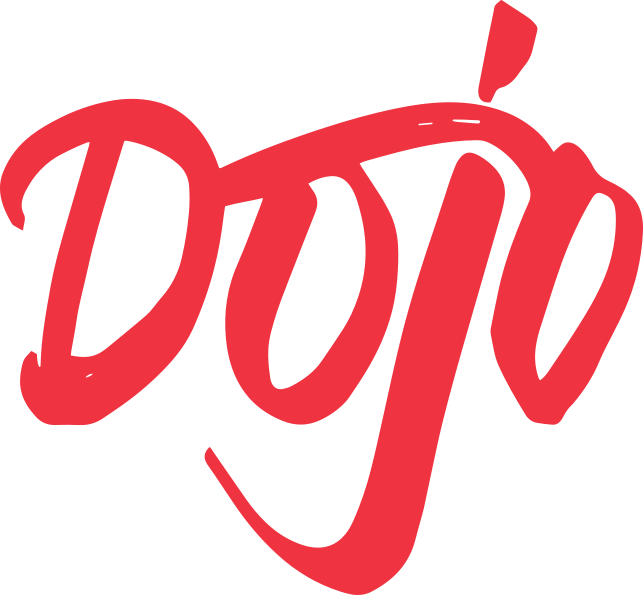

01 / Данные загружены
Показываем актуальное
Места, текущий тариф и время последнего обновления из подтвержденного ответа
Макет целиком ↗
БРЕНДБУК / ВЕРСИЯ 02ОКТЯБРЬ 2026НАВИГАЦИЯ
45 страниц о системе DOJO
Полный набор макетов, карточек и исходников — в HTML-витрине
ЭКРАН В КЛУБЕ
Карта и текущий тариф зависят от ответа API
Ниже демонстрация поведения на данных примера
Места, текущий тариф и время последнего обновления из подтвержденного ответа
Макет целиком ↗До первого ответа нет счетчика свободных мест и вымышленных процентов загрузки
Макет целиком ↗Последний ответ явно помечен как устаревший и не выглядит текущим состоянием клуба
Макет целиком ↗